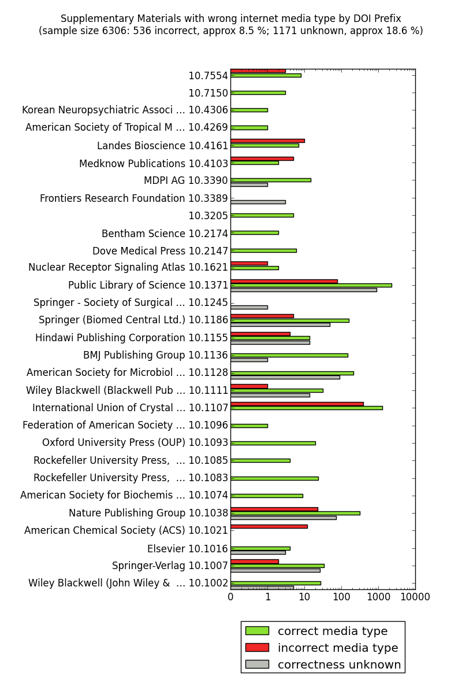

License tagging
As mentioned above, an important function of the OAMI is to determine, for each media file,
the license under which it or its parent article has been released.
In reading and analyzing the license data, the OAMI looks for licenses that are truly open,
in the sense of being free to reuse, revise, remix and redistribute, as laid out in the
Budapest Open Access
Initiative a decade ago. Licenses with "non-commercial" and "no
derivatives" clauses are not
acceptable on Wikimedia Commons. Figure 2 shows a breakdown of the licenses we
have found in the PMC OA subset for articles indexed during the first week of May this year,
with color-coding to illustrate which licenses are "free" in the sense of allowing
reuse on Wikimedia Commons, and which are not. More formal definitions of this sense of
freedom can be found in the Definition of Free Cultural Works and
the Open
Definition.
Figure 2. Licenses of supplementary materials in the PMC OA subset, by license URI,
for the first week of May 2013.

This information is tagged in the source XML for each article. In the rest of this section,
we will review the JATS elements and attributes related to license data, and then describe
some of the problems we encountered when trying to harvest this data from actual
articles.
In JATS 1.0, there are several XML elements and attributes that are used to specify license
information for an article and its accompanying multimedia files.
-
<permissions> - this is a container element, within which all
copyright and license metadata should appear
-
<license> - this is the main element for specifying license
information. Among the attributes allowed on this element, the following two are
relevant:
-
@license-type - the value is not constrained; "open-access" is
one suggested value.
-
@xlink:href - takes an external URL; often the URL identifying the
specific Creative Commons license.
-
<license-p> - paragraph of text within a <license> element.
Semantically, this is a <p> element with the addition of <price> to the content model. (Prior to the NLM Tag Set version 3.0,
the <p> element was used here.)
-
<ext-link> - can appear within the <license-p> element, and
provides a link to an external resource. This also takes an optional xlink:href
attribute.
An example of good license tagging, from the JATS 1.0 Tag
Library documentation, is the following.
<permissions>
...
<license license-type="open-access"
xlink:href="http://creativecommons.org/licenses/by/2.0/">
<license-p>This is an open-access article distributed under the terms of the
Creative Commons Attribution License, which permits unrestricted use,
distribution, and reproduction in any medium, provided the original
work is properly cited.</license-p>
</license>
</permissions>In the above example, the Creative Commons license is unambiguously identified by the URI
in the @xlink:href attribute of the <license> element. The <license-p> element
provides the human-readable text of the license, which matches the machine-readable version
(except for not including the version number of the Creative Commons license, and the
hyperlink.)
PMC Tagging Guidelines and Style Checker
PMC provides additional recommendations and specifications for article tagging, which are
layered on top of the requirements of the JATS standard. These are documented at the
PMC Tagging Guidelines, and they include guidelines for tagging license information.
Recently, in part in order to minimize some of the inconsistencies in tagging that are
described below, PMC has amended these to include the following statement:
When including a URI for a license, the URI should be included either on the
<license> in @xlink:href (preferred) or in an <ext-link> in the content of the
license. The URI must not be tagged in both places.
Complementing that, the Style Checker
now has additional checks to help ensure the consistency of the license information. In
particular, it will generate an error if there is an xlink:href attribute on the
<license> element, and one on a descendent <ext-link> element, and the URIs do
not match.
Unfortunately, these recent changes do little to address most of the problems described in
this paper. We provide some recommendations for how these resources could be further
improved, in the Recommendations section, below.
Problems encountered by the bot
While developing and deploying the OAMI, we discovered that automatically discerning the
licensing terms and reuse rights was non-trivial. In contrast to the example of
"good" markup above, within the article XML available from the PMC OA subset,
licensing metadata is not expressed consistently across journals, and sometimes not even
across different articles of the same journal. Here, we list a few examples.
Contradictory information
In many cases, the URI identifying the Creative Commons license was contradicted by the
human-readable text. For example, from the article PMC2658715 (publisher version), the URI specifies "CC-BY", but the
human-readable description adds the extra "NC" (non-commercial) restriction:
<license license-type="open-access"
xlink:href="http://creativecommons.org/licenses/by/2.5/">
<p>Re-use of this article is permitted in accordance with the Creative Commons Deed,
Attribution 2.5, which does not permit commercial exploitation.</p>
</license>In other examples, the human-readable descriptions were actually self-contradictory. The
following is an example from PMC3143982 that also has a typo in the license name.
<license license-type="open-access">
<license-p>This work is licensed under a Creative Commons Attr0ibution 3.0 License
(by-nc 3.0).</license-p>
...
</license>We have found that the phenomenon of self-contradictory licenses is rather common and not
restricted to small and lesser known publishers. The next example is from PMC3468739. While the machine-readable license is CC BY, the human-readable
version has a non-commercial clause.
<license license-type="open-access"
xlink:href="http://creativecommons.org/licenses/by/2.5/">
<license-p>Re-use of this article is permitted in accordance with the Creative
Commons Deed, Attribution 2.5, which does not permit commercial
exploitation.</license-p>
</license>
License information outside the <license> element
In the following example, from PMC3158088, the Creative Commons license text is given in the
<copyright-statement> element rather than the <license> element.
<permissions>
<copyright-statement>
Uosaki et al. This is an open-access article distributed under the terms of
the Creative Commons Attribution License, which permits unrestricted use,
distribution, and reproduction in any medium, provided the original author
and source are credited.
</copyright-statement>
<copyright-year>2011</copyright-year>
</permissions>These statements in the <copyright-statement> element may (PMC3605902) or may not (PMC3589467) contain an xlink:href attribute, even within otherwise identical
license text.
At the time of this writing, PMC has 281,148 author manuscripts, of which 5383 (about 2%) are in the OA subset. In a sample of those that are not in
the OA subset, it was found that 1%, do in fact have a Creative Commons license, but the
license information is completely outside of the <permissions> element. For example,
in PMC3717328, the license information is given in a <fn> element within
the back matter:
<fn id="FN5">
<p content-type="publisher-disclaimer">
<bold>Open Access</bold>: This article is distributed under the terms of the Creative
Commons Attribution License 3.0 which permits any use, distribution, and reproduction in
any medium, provided the original author(s) and the source are credited. To view a copy of
the license, visit <ext-link ext-link-type="uri"
xlink:href="http://creativecommons.org/licenses/by/3.0/"
>http://creativecommons.org/licenses/by/3.0/</ext-link>
</p>
</fn>This effectively makes it undiscoverable, because any automatic process attempting to
determine the license of an article would have to exclude things outside of the
<permissions> element, otherwise there would be the possibility of false positives
resulting from articles that discuss and quote licenses
and license text within the article body.
Contradictory URIs
Until recently, many articles in PMC had mismatches between the URIs that appear on the
<license> element and those that appear inside the license text within
<ext-link> elements. To address this problem, as mentioned above, PMC has instituted
a new Style Checker rule that requires that if there are multiple URIs, they must
match.
In addition, PMC has fixed most instances of such conflicts within the existing
database.
No machine-readable URI
Some articles (including the vast majority of those deposited by PLOS) have Creative
Commons licenses, but don't contain any machine-readable URI identifying that license. An
example of the tagging from a recent PLOS ONE article, PMC3738584, is:
<permissions>
<copyright-year>2013</copyright-year>
<copyright-holder>Bassaneze et al</copyright-holder>
<license>
<license-p>This is an open-access article distributed under the terms of the
Creative Commons Attribution License, which permits unrestricted use,
distribution, and reproduction in any medium, provided the original author
and source are credited.</license-p>
</license>
</permissions>This is particularly troubling, since PLOS papers represent a large and quickly
increasing percentage of PMC, and especially PMC's OA content. Additionally, the phrasing
of the human-readable text may vary across articles from the same journal that are under
the same license.
Missing license information altogether
Finally, there are the cases of articles in the OA subset (e.g. PMC3775889) that have no license information in the XML at all, meaning that
an automated tool would either have to consider the article to be under "all rights
reserved" – which would even prohibit the kind of data mining that the OA subset is
intended for and that the OAMI performs – or to contain code specific to particular
journals or publishers, or require manual assistance by a human (who, in the case of the
cited example, would find out that the article in question is actually licensed CC BY).
Impact of these problems on PMC
PMC recently implemented a search-by-license feature, described on their Open
Access Subset page. This feature allows users to query for articles matching
specific Creative Commons licenses, and can be combined with other search terms.
Unfortunately, because of the tagging problems described above, the PMC indexer, in many
cases, cannot correctly determine the license of articles. Therefore, the search result
sets are much smaller than they otherwise would be.
For example, in a sample of 100 articles that are in the OA subset, but that do not match
the "cc license" filter (PMC search), it was found that 99 did, in fact, have CC licenses, but that
tagging problems prevented them from being correctly identified as such. At the time of
this writing, there were 663,843 articles in the OA subset, and 52% did not match the
"cc license" filter. If the sample described above is representative, then that
means about 340,000 eligible articles would not be discoverable through this search
feature.
Impact of these problems beyond PMC
In the OAMI, these problems necessitated the development of a fairly sophisticated
text-mining module that examined both the machine-readable URI in the <license>
element, as well as the human-readable expressions, so as to determine the publisher's
intent. Because of Wikimedia Commons' strict enforcement of proper licensing, it was
important that this module be conservative: false positives being much less acceptable
than false negatives.
Development of a license-mining algorithm such as this is costly, and would tax the
resources of any project seeking to reuse PMC OA content. Even with this algorithm, the
inconsistency and number of errors that we found indicate that there are still a great
number of articles that could legitimately be uploaded to Wikimedia Commons, but that are
not properly identified. This does a disservice to those who released their material with
reuse-friendly licenses, often in the hopes of having it be used as widely as
possible.
The lack of ability to reliably determine licensing information on a per-article basis
contributes to other problems as well. One such problem is that publishers sometimes erect
paywalls around open access content, counter to the express wishes of the authors. One way
to explain this could be that the sites are not flexible enough to handle per-issue or
per-article license information. Perhaps, if the tagging of this information in JATS XML
documents were consistent and reliable, it would facilitate systems that were more
flexible, and able to serve open content directly, which still presenting a paywall for
closed content.
As another example, the Directory of Open Access Journals (DOAJ) already allows one to
list
journals by license, and plans are afoot to expand this functionality to the
level of individual articles. Again, this could be facilitated by consistent and reliable
tagging of JATS XML articles.
Broader license issues
Multiple licenses with different scope
Recently, some journals have begun to make data and supplementary materials available
under a license that differs from the main article's license. For example, F1000Research
is providing articles with text content that is available under CC-BY, but with
accompanying data available in the public domain (CC0). Here is an example of the tagging
of a recent article from their website:
<permissions>
<copyright-statement>Copyright: © 2013 Baird AH et al.</copyright-statement>
<copyright-year>2013</copyright-year>
<license license-type="open-access"
xlink:href="http://creativecommons.org/licenses/by/3.0/">
<license-p>This is an open access article distributed under the terms of the
Creative Commons Attribution Licence, which permits unrestricted use,
distribution, and reproduction in any medium, provided the original work is
properly cited.</license-p>
</license>
<license license-type="open-access"
xlink:href="http://creativecommons.org/publicdomain/zero/1.0/">
<license-p>Data associated with the article are available under the terms of
the Creative Commons Zero "No rights reserved" data waiver (CC0 1.0 Public
domain dedication).</license-p>
</license>
</permissions>The scope and the intent of each of the two <license> elements is clear to a human
reader, but, unfortunately, there is no way for an automated bot to be able to
unambiguously identify the two different scopes.
If licensing information were available along with provenance on a per-file basis in a
machine-readable format, there would be potential for automated checks of licensing
information. Few scholars outside the field of copyright law are aware of all the
implications of publishing under certain licenses, which sometimes leads to content
available under a particular license being published (Example
1) or re-published (Example
2) in incompatibly licensed papers. In Example 1, the issue could be solved
by the copyright holder changing the licensing of the original file, whereas in Example 2,
a video displaying wrong license information was fixed and re-uploaded at the publisher's
site but not at PMC, despite the published correction.
There is no straightforward way to detect such cases algorithmically, and raising
awareness for these issues amongst authors, editors and reviewers can certainly not be
automated either.
Incremental licenses
Often, articles are published with license terms that change over time. The following is
an example from PMC3601365.
<license license-type="openaccess">
<license-p>
This article is distributed under the terms of an Attribution–Noncommercial–Share
Alike–No Mirror Sites license for the first six months after the publication date
(see <ext-link ext-link-type="uri"
xlink:href="http://www.rupress.org/terms">http://www.rupress.org/terms</ext-link>).
After six months it is available under a Creative Commons License
(Attribution–Noncommercial–Share Alike 3.0 Unported license, as described at
<ext-link ext-link-type="uri"
xlink:href="http://creativecommons.org/licenses/by-nc-sa/3.0/">
http://creativecommons.org/licenses/by-nc-sa/3.0/</ext-link>).
</license-p>
</license>One problem with this is that both licenses are given within a single <license>
element, which would complicate the data model for any program attempting to process
these. Another is that there is no machine-readable indication of the time period covered
by each of the two separate licenses.
We provide a recommendation of how this tagging could be improved (both for licenses with
different scope, and with different effective date ranges) in "PMC license
metadata", below.
Standardization efforts
There have been a number of efforts to standardize the expression of license metadata.
Among these are:
Many of these standards provide complex mechanisms for specifying or customizing the
particular terms of a license. We welcome these efforts, and look forward to the time when
the tags they define can be integrated with JATS. However, the simplest and most
fundamental way of robustly signaling a license will probably always be to unambiguously
link to a URI that's defined, controlled and perhaps versioned by an established
organization such as Creative Commons.
Media types
In addition to the problems with communicating the licensing terms, the media types of
supplementary materials are frequently not indicated properly, which reduces discoverability
and translates into extra efforts before any reuse becomes possible.
Media types (originally called "MIME types") are two part identifiers that
describe the format of a multimedia file. Familiar examples are "text/plain", and
"application/xml". When serving these types of files, web servers provide the
media type in the HTTP "Content-type" header. This allows the client to determine
how the file should be processed. In the case of the OAMI, the processing is the conversion
of the file format, since Wikimedia Commons only accepts audio or video files encoded in
open formats.
The JATS standard provides two attributes to allow for encoding the media types of files
that accompany journal articles:
These attributes are allowed on several elements that identify these types of files,
including <supplementary-material> and <media>.
The JATS specification includes the following example of how to tag a media file in an
article's supplementary material (slightly elided):
<supplementary-material id="S1" xlink:href="1471-2105-1-1-s1.pdf"
mimetype="application/pdf">
<caption>
<p>Supplementary PDF file supplied by authors.</p>
</caption>
</supplementary-material>Note:
-
The mimetype attribute is used to store both parts of the media type, rather than
splitting out the "subtype" into the mime-subtype attribute
-
The information about the media file is given right on the
<supplementary-material> element, rather than, for example, a child <media>
element.
In contrast, the PMC Tagging Guidelines stipulate, for the <supplementary-material>
element:
Should include <media> or <graphic> to identify the supplemental file. File
description in <media> or <graphic> must include the file name (including file
extension) in @xlink:href; <media> also requires @mime-type [sic], and
@mime-subtype.
So, there is some ambiguity as to the best practice for tagging supplementary media
files.
Media type and related problems
The following are some examples of the problems that we encountered that are related to
media types.
Foremost were those resulting from mismatches among:
-
The declared media type in the @mimetype and @mime-subtype attributes of the source
XML, including mismatches between the XML available from the publisher and PMC,
-
The "Content-type" headers as seen from PMC, and
-
The actual media type of the file.
Mismatches between publisher XML, PMC XML, and Content-type
The following figure suggests the scope of the problem of media type mismatches.
Figure 3. Supplementary media files with the wrong media type, by DOI prefix,
from a sample of articles indexed in the first week of May 2013. Unknown refers to MS
Office files, between the different formats of which we did not distinguish.

For an example of such a mismatch, in the article PMC3162007, the Models S1 file under "Supporting Information" is actually of type
"application/x-rar-compressed". The original publisher XML encodes this correctly:
<supplementary-material id="pone.0023819.s009" mimetype="application/x-rar-compressed" ...
However, the XML from PMC is wrong:
<supplementary-material content-type="local-data" id="pone.0023819.s009">
...
<media xlink:href="pone.0023819.s009.rar" mimetype="audio" mime-subtype="x-realaudio">
...
</supplementary-material>
Furthermore, PMC returns the (wrong) HTTP "Content-Type" header
"application/octet-stream".
Mismatches between filename extension and media type
In the article PMC2386968, the URL to the Movie S2 ends with ".doc", and PMC returns "Content-Type:
application/msword". However, the file is actually a Microsoft ASF file, which should
have media type "video/x-ms-wmv".
The PMC XML is wrong:
<supplementary-material content-type="local-data" id="pone.0002276.s002">
...
<media xlink:href="pone.0002276.s002.doc" mimetype="application" mime-subtype="msword">
...
</supplementary-material>
Media type misidentified in publisher XML
In the article PMC3619089, the additional data file is a video that has an actual media type of "video/mp4", but this is
tagged incorrectly in the publisher’s XML (notice the misspelling):
<supplementary-material xlink:href="Movie_1.MP4" id="SM1" mimetype="applicationn/MP4" ...
The PMC XML is wrong too, but in a different way:
<supplementary-material content-type="local-data" id="SM1">
<media xlink:href="Movie_1.MP4" mimetype="video" mime-subtype="quicktime">
...
</supplementary-material>
Missing media type in XML
Many articles lack any indication of the media type within their XML. For example, in the
article PMC3765204, there is no media type indicated for either Movie 1 or Movie 2.
The two videos in PMC3770602 also lack any indication of media type.
The problem of missing @mimetype and @mime-subtype attributes is fairly common. For
example, in the article PMC3765681, the XML lacks any indication of the media type:
<media xlink:href="1556-276X-8-131-S1.tiff">
<caption>
<p>Click here for file</p>
</caption>
</media>After September, 2013, when PMC stopped writing these attributes into source XML (see
Recent efforts at PMC, below) the frequency of this problem went up, but the
frequency of incorrect attribute values went down, as would be expected.
Problems with <label>, <caption> and <title>
In addition to problems involving the media types, there is also a lot of variability in
the way that the <label>, <caption> and <title> elements are used, and
this causes problems for automated tools.
For instance, in PMC3713652, the caption for several supplementary files is given in the
first caption element, and there is no way to automate the process of determining which
caption should go with which file:
<supplementary-material content-type="local-data" id="f1">
<caption>
...
<p>Supplemental Figure 1. Micrographs illustrating ...</p>
<p>Supplemental Figure 2. Merged image of RANKL, FN, ...</p>
...
</caption>
<media xlink:href="876316.f1.avi" mimetype="video" mime-subtype="x-msvideo">
<caption><p>Click here for additional data file.</p></caption>
</media>
</supplementary-material>
<supplementary-material content-type="local-data" id="f2">
<media xlink:href="876316.f2.avi" mimetype="video" mime-subtype="x-msvideo">
<caption><p>Click here for additional data file.</p></caption>
</media>
</supplementary-material>
...Other articles, for example, PMC3656359, do not provide any content-related information in the
captions:
<supplementary-material content-type="local-data" id="SM1">
<media xlink:href="43049_Jiang_Movie1.AVI" mimetype="video" mime-subtype="x-msvideo">
<caption>
<p>Click here for additional data file.</p>
</caption>
</media>
</supplementary-material>
Missing references to supplementary materials
In a few cases, the source XML of suitably licensed articles available from PMC do not
have any reference to the multimedia files whatsoever. For example, PMC3104346 has two supplemental videos, which can be viewed on the
publisher's site, but are not referenced in the XML.
Another example of this is PMC3423924, which has a supplemental video that can be downloaded from the
publisher
site, but, again, no reference to that from the XML.
Recent efforts at PMC
Many of the problems described above were due to PMC's incorrectly adding @mimetype and
@mime-subtype attributes to XML that it received, based on the assumption that the media
file's extension accurately reflects its media type. When it was recognized that the
filename extension was not a reliable indicator of the media type, and that it's better to
have no declared media type than to have it wrong, PMC has stopped executing this
function.
Also, in part because of the recognition that the values for @mimetype and @mime-subtype
being supplied by publishers was not reliable, PMC is in the process of changing the
Tagging Guidelines to make these attributes, when they appear on the <media>
element, optional.
Also, in response to some of these problems, PMC has implemented a new feature in its
rendering software to ensure the accuracy of the "Content-type" header it
provides in response to HTTP requests for the media files. This makes use of the standard
Unix library libmagic, which is also used by the OAMI and determines a file's type based
on patterns of data within its content. In this way, PMC can be sure that it is delivering
accurate metadata in the HTTP response, based on the actual file at the time it is
served.
There are no plans to retroactively fix the existing XML markup in the PMC database, or
to adjust the @mimetype or @mime-subtype attributes for any new articles received.
Standardization efforts
Over the past few years, the NISO/NFAIS Supplemental Journal Article Materials Working
Group has been working on standards for handling supplementary materials, and has
published NISO RP-15-2013, Recommended
Practices for Online Supplemental Journal Article Materials1 earlier this
year.
This document lists "recommended minimal and extended metadata" (section B.2.2
Metadata Elements), and recommends open formats that can be rendered by free, open-source,
and ubiquitous application software (section B.4.2 Preservation Recommendations) and also
briefly touches upon licensing (section A.3.10 Rights Management). With respect to media
types, the group recommends – as part of a strategy to enable long-term preservation –
that publishers accept supplementary materials in formats defined in formal format
registries, such as the Unified Digital Format Registry (UDFR) or PRONOM. These formats
provide much more information than the simple media type.
The kind of media type issues reported here would be much less frequent in articles
properly tagged according to these NISO recommendations.
Keywords
The OAMI, when it uploads files to Wikimedia Commons, assigns them to Wikimedia Commons
categories, so as to facilitate search and discovery by users. The OAMI attempts to
determine these categories based on keywords or subjects in the source XML, or MeSH terms
supplied by the journal, by PMC or by PubMed for the corresponding article. We found that
articles within the OA subset had very inconsistent tagging of keywords, and that caused
many problems.
The NISO JATS specification provides recommendations in the Tagging
Keywords section of each of the three tag sets. It describe two main methods
for tagging keywords:
-
With any of a number of elements inside <kwd-group>: <kwd>,
<compound-kwd>, <compound-kwd-part>, <nested-kwd>, and
<unstructured-kwd-group>
-
With <subject> elements inside <subj-group>, inside
<article-categories>
Tagging with kwd-family elements
The <kwd-group> element is a container for other elements that specify the keywords
themselves. It takes an attribute, @kwd-group-type, that qualifies the type of keywords
that appear in the group. The JATS specification page
for this attribute indicates that it should be used for either of two
purposes: defining the authority of a controlled vocabulary from which the keywords come,
or for describing the type of the keywords as "hierarchical",
"abbreviation", etc. (This is an unfortunate conflation of two orthogonal
concepts.)
The <kwd-group> element can appear within either article or section metadata.
Unfortunately, at present, it cannot be applied to individual media or data files.
However, there is a comment on the NISO site requesting that this attribute be added to several
other elements, including <media> and <supplementary-material>, and we support
this suggestion.
The following is an example of the typical usage of <kwd-group> and <kwd>,
from PMC2630158:
<kwd-group>
<kwd>French pox</kwd>
<kwd>Augsburg</kwd>
<kwd>medical semiotics</kwd>
<kwd>diagnosis</kwd>
<kwd>hospital</kwd>
</kwd-group>
Tagging with <subject>
In many articles, keywords are tagged within <subject> elements, that are nested
hierarchically inside <subj-group> elements.
An example of reasonably good tagging is from PMC3708714, where the keywords are specified in a clean hierarchical
structure inside <subj-group> and <subject> elements:
<subj-group subj-group-type="Discipline-v2">
<subject>Biology</subject>
<subj-group>
<subject>Biophysics</subject>
<subj-group>
<subject>Nucleic Acids</subject>
<subj-group>
<subject>DNA</subject>
</subj-group>
</subj-group>
</subj-group>
<subj-group>
<subject>Computational Biology</subject>
<subj-group>
<subject>Molecular Genetics</subject>
<subj-group>
<subject>Gene Regulation</subject>
</subj-group>
</subj-group>
</subj-group>
...
<subj-group>
<subject>Synthetic Biology</subject>
</subj-group>
</subj-group>
Tagging problems
Bad keywords
Because the values for keywords are unconstrained, and typically not members of a
controlled vocabulary, there is no way to validate them. This, of course, leads to
problems with typos, misspellings, differences in case, and so forth, that make them
difficult to process by machine.
For example, we have noticed that in PLOS articles, a recurring typographical error is
encountered, in which a superfluous space is inserted into a keyword. When media files
from these articles are processed by the OAMI and uploaded to Wikimedia Commons, they are
thus assigned the Wikimedia Commons category "Biophysic al simulations". To work around this problem, we have
inserted a permanent redirect from that misspelled category to one with the proper
spelling. The presence of files in this redirected category then triggers another bot on
Wikimedia Commons to fix the categorization of affected files automatically.
Inconsistent use of the @subj-group-type attribute
Most of the time, the <subj-group> and <subject> elements are used to
specify, not keywords, but a subject heading that would appear in the Table of Contents
for a journal issue; and is often equivalent to the type of article, as
"Article", "Letter to Editor", "Meeting Notice", etc. When
used this way, the @subj-group-type attribute normally has the value
"heading".
When using <subj-group> and <subject> elements to describe keywords, the JATS
specification suggests that the @subj-group-type attribute have a value of, for example,
"keywords". However, we found the use of this attribute to be very inconsistent.
Note in the "good" example above, that the value "Discipline-v2" is
used. In a sample of articles from the OA subset, often we saw no value at all given for
this attribute. Among those that did supply a value, we found the following:
-
Article Type
-
Article type
-
Primary
-
Secondary
-
hw-coll-titles
-
hwp-journal-coll
-
overline
-
search-keyword
-
section
-
topic
As with the keyword values themselves, this proliferation of values, with no centralized
way to determine their semantics, makes them difficult to process by machine.
No keywords or subject tags
In many articles, no keywords or subject tags were given at all, other than the
"heading" subject, which is not useful for this purpose. For example, PMC3425056 has only this markup:
<subj-group subj-group-type="heading">
<subject>Case Report</subject>
</subj-group>
Inconsistent use of the @kwd-group-type attribute
As with the @subj-group-type attribute described above (and most of the attributes
defined in JATS), there is no enumeration of, or constraint on, the values that this
attribute can take. Publishers each choose their own values, and this leads to
incompatibilities.
The following are some of the values that we found:
-
abbr
-
author
-
journal subjects
-
KEYWORDS
-
keywords
-
kwd
Recommendations
We will thus end by discussing some more long-term prospects for enhancing the
discoverability of reusable open-access content, combined with practical recommendations
for how the current situation might be improved.
License tagging
We recommend that the PMC Tagging Guidelines and Style Checker be changed to require
that, if a license is defined by a URI (as are CC licenses), that the article
must put this URL into the @xlink:href on the <license> element.
This should be the sole place that a machine (or anyone) should need to look for the
license URI. (This is in contrast to the current guidelines, which state that it can be
tagged on an @xlink:href on either the <license> element, or on any <ext-link>
descendent of <license>.)
If that were implemented, then it would no longer be necessary to do comparisons between
that URI and any other URI within the <license-p> elements, and this check should be
dropped. The rationale for this is that any content within the <license-p> elements
is intended for human, not machine, consumption, and might contain arbitrary hyperlinks,
which cannot be predicted, and should not be constrained.
The PMC Style Checker could be enhanced to dynamically check the validity of any
creativecommons.org URIs that appear in that attribute. Creative Commons provides a web
service for this purpose (see, for example, this service call).
Funders of scientific research that have open-access mandates might consider adding
the requirement that the licenses be tagged according to the best practices
described here. That would facilitate automated tools that could verify that the
work does, indeed, conform to their OA requirements.
PMC license metadata
The license metadata for articles in the PMC archive, because it is based on the markup
of the source XML, is not reliable. One effect of this, as discussed above, is that it
detracts from the usefulness of the search-by-license feature.
PMC could improve the way this license data is derived, re-using some of the business
rules by which it determines which articles become part of the OA subset.
Also, as part of this project, we curated the license data for thousands of articles in
the PMC OA subset. It would be nice if PMC would incorporate that data back into their
system, so that future users would not have to duplicate our effort.
The license data that does reside in the PMC system should be better exposed. For
example, we recommend that it be added to the E-utilities esummary output for articles,
for both PubMed and PMC.
For articles that have multiple licenses, which either change over time, or apply to
different parts (for example, one license for the article proper, and another for data),
we suggest that there be one <license> element for each, and that the @specific-use
attribute be used to define the scope. The default scope would be "article", but
if, for example, there were a different license for the data, then that would be marked up
as follows.
<permissions>
<license license-type="open-access"
xlink:href="http://creativecommons.org/licenses/by/3.0/">...</license>
<license license-type="open-access"
specific-use="scope: data"
xlink:href="http://creativecommons.org/publicdomain/zero/1.0/">...</license>
</permissions>If the article has a license that changes over time, then that could be marked up as
follows (this is meant to be suggestive, only).
<permissions>
<license license-type="open-access"
specific-use="end-date: 2013-10-22"
xlink:href="http://creativecommons.org/licenses/by/3.0/">...</license>
<license license-type="open-access"
specific-use="start-date: 2013-10-23"
xlink:href="http://creativecommons.org/publicdomain/zero/1.0/">...</license>
</permissions>
Media types and format
The PMC Tagging Guidelines should be changed to require the media types to be in the
@mimetype attribute only, and deprecate @mime-subtype. The Style Checker should verify
that the @mimetype attribute is present, that it has a valid form, and that @mime-subtype
is not given.
PMC could develop a media type checking utility, using the same libmagic Unix library and
data files, to be applied to data and media files that accompany articles for ingest. The
system could fix the @mimetype attributes in the source XML to reflect the actual media
types as determined by this library. As mentioned above, PMC has fixed the HTTP
"content-type" headers, but if someone were to download the article and
accompanying media files, and share them outside of the PMC system, the mismatch in the
source XML could still be a problem.
Perhaps this utility could also function to validate the multimedia and other data files
that are received. Since these files form an integral part of the scientific record, just
as with the source XML, the validity of these files is important. Since the operation of
the OAMI began, we have found on the order of 100 video files which could not be
processed, because some essential information (for example, the frame rate, or
intermediate I-frames) is not given, or not in a proper way (example).
Such a data validation system could start with a small set of file types, for which
consistency checks could be set up. The consistency checker could be made available as a
web service, and the Tagging Guidelines could recommend (but not require) that files be
provided in those formats, and link to the web service.
As mentioned above, NISO RP-15-2013 has recently been published, and we encourage publishers to
adopt these recommendations. We note that there is another paper within these conference
proceedings, "Extending
JATS to include the NISO/NFAIS Recommended Practices for Online Supplemental Journal
Article Materials", which might prove useful in this regard.
However, we would also like to note that we have concerns about these recommendations,
that mirror some of the concerns that we have expressed about JATS in general.
Specifically, we feel that the recommendations are, in many cases, not conducive to
producing consistent, robust, and machine readable metadata.
For example, in the description of the <license> element, they say, "The <ext-link> can be used to
link to licenses that are already defined, such as a Creative Commons license." This
should not be discretionary. The specification should be explicit that when a URI exists
that identifies a license, that it must be included, and in a well-defined place. Note
that this schema allows multiple <ext-link> elements under <license>, so the
ambiguities that exist in JATS, that have led to such wide variation in tagging of this
metadata, are continued in this new recommendation.
Keywords
As mentioned above, we support the suggestion on the NISO
JATS document page requesting that the <kwd-group> element be added to
the content model of several new elements, including <media> and
<supplementary-material>.
Public versioning of PMC/OA XML files
Many of the issues discussed here could in principle be fixed by running some dedicated
scripts over the affected XML files. However, even if such scripts were functional and
readily available, there is currently no mechanism that would allow such fixes to be fed
back systematically and automatically to the respective sources of these XML files, or to
third-party copies thereof. One step in this direction would be to make the XML files
available in an updatable environment with public versioning. This would be possible for
articles in the Open Access Subset. Indeed, eLife and Pensoft have
demoed this on GitHub, and a tool for porting JATS XML to MediaWiki
environments exists as well.
Various kinds of modifications to existing XML are theoretically plausible that would
merit adoption of such a system. These include – but are not limited to – typos,
corrigenda and retractions, but also license changes (e.g. when copyright owner changes
licensing backwards, or when copyright expires), media type mismatches, missing or mixed
up files, captions or unique identifiers, or "in press" references.
Use cases
So far, JATS has mainly been used to exchange information between publishers and
archives. Under traditional notions of copyright, large-scale reuse of such information by
third parties is very limited but PMC's Open Access Subset – particularly the
Wikimedia-compatibly licensed portions thereof – opens the door for experimentation on
this front. We see value here in introducing the concept of use cases and collaborating
with suitable use case partners in further developing JATS as well as the corresponding
guidelines and style checkers. The OAMI bot could serve as one such use case. Species
disambiguation, citation analyses or
automated query formulation could be others.